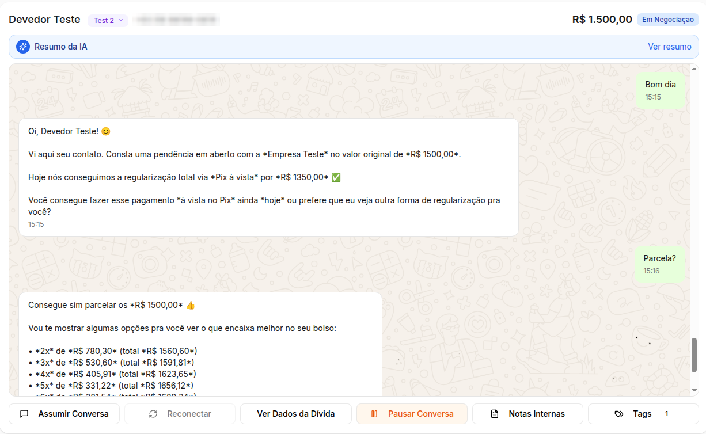

Agentes de IA em produção · recuperação de crédito
O Cobrador.ai conversa com quem está devendo, oferece as condições que cada empresa autorizou e fecha o acordo sozinho. Quando o caso exige transbordo, ele passa a conversa adiante para um atendente. Esta página mostra como ele foi construído.
O que o cliente vê no WhatsApp
O que o sistema registra
{ "acao": "registrar_acordo_parcelado", "dados_acao": { "num_parcelas": 3, "valor_parcela": 88.43 } }
ACORDO_FECHADOExemplo ilustrativo, com nome e valores fictícios. O valor das parcelas vem de uma ferramenta de cálculo, e não do modelo. Logo abaixo, um print real.

Em produção desde julho de 2026. Números arredondados para baixo.
Entrei na Screencorp como estagiário de IA. Em outubro de 2025, eu e meu gestor fundamos o Cobrador.ai, e eu assumi a parte técnica como CTO.
Construí a orquestração dos fluxos, o agente negociador, a avaliação automatizada, o banco de dados, os relatórios e a infraestrutura. O painel web que os clientes usam foi feito por outro integrante da equipe.
Uma equipe passa o dia mandando a mesma mensagem, calculando parcelas e anotando promessas em planilhas.
Muita gente só olha o WhatsApp à noite ou no fim de semana, quando não há ninguém para fechar o acordo.
Um modelo de linguagem solto pode prometer um desconto que a empresa não autorizou ou errar uma conta. Em cobrança, isso vira prejuízo e reclamação.
São 17 fluxos no n8n, com um banco PostgreSQL no Supabase e a API oficial do WhatsApp. O sistema tem dois sentidos: ele reage quando o devedor escreve e puxa a conversa quando chega o dia de cobrar.
O modelo conversa bem. O trabalho de engenharia está em tudo o que impede que ele faça algo que a empresa não autorizou.
O valor à vista já chega calculado no contexto, e as parcelas vêm de uma tool determinística que aplica os juros e o máximo de parcelas de cada carteira. O prompt proíbe fazer conta de cabeça.
O agente devolve a mensagem, uma ação de uma lista fechada e os dados dela. Antes de gravar, o sistema confere a ação: uma data precisa estar no formato certo e um parcelamento não pode passar do máximo.
Quem manda quatro mensagens em sequência dispara quatro execuções. Um debounce faz só a última responder, com o texto agrupado. Se chega mensagem nova enquanto o agente pensa, a resposta antiga é descartada.
Alegação de fraude, número errado, “já paguei” ou agressividade levam a conversa para a equipe. Um trigger no banco pausa os contatos automáticos sempre que o caso chega a um status final.
Muitos números respondem com mensagem automática. Três mensagens idênticas em 30 minutos marcam o contato como bot e encerram a conversa, em vez de deixar dois robôs trocando mensagens.
O histórico vai com data e hora de cada mensagem. Assim o agente não diz “conforme combinamos ontem” para alguém que respondeu cinco minutos depois.
Antes de mudar o prompt em produção, coloco o agente para negociar com outra IA. Uma IA “atacante” assume uma persona de devedor sorteada de uma lista de perfis e conversa com o agente por 10 rodadas, com regras de negócio também sorteadas. No fim, uma IA “juíza” lê a conversa inteira e aponta qualquer regra quebrada.
Exemplo de veredito
{ "resultado_teste": "FALHOU", "regra_quebrada": "Ofereceu parcelamento na primeira mensagem", "severidade": "MEDIA", "persona": "Desconfiado", "rodadas": 6 }
A mesma ideia de checagem aparece nos relatórios que os clientes recebem. Um script em Python monta o PDF com textos escritos por IA e depois compara cada número do texto com os dados de origem. Se aparece um número que não existe nos dados, o modelo recebe a lista dos números errados e reescreve.
Veredito ilustrativo, no formato que o fluxo de teste produz.
n8n, com 17 fluxos para recepção, negociação, régua, fila, gateway e rotinas
OpenAI via LangChain, com saída estruturada, tools e avaliação com LLM como juiz
API oficial do WhatsApp (Meta): webhooks, templates e status de entrega
PostgreSQL no Supabase, com triggers, funções e índices para a fila
Python, Jinja2 e Playwright, gerando PDF com validação dos números
VM na Azure com Docker e Caddy, staging e backup diário via CI/CD